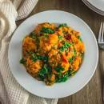
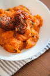

Yam porridge or Asaro is another delicious Nigerian yam dish cooked in a well-seasoned pepper mix until soft and fluffy with some yam chunks. It is very quick and easy to make. It makes a perfect dinner or lunch and it is also a party favourite.
Asaro is made from Puna Yam which is boiled till it’s tender and it’s cooked in a blend of Peppers, Tomatoes, onions, palm oil, and seasoning. While the dish is more common in the Yoruba-speaking region of Nigeria, it is still a meal enjoyed by the majority alike each with their own regional variation.
| S/N | INGREDIENTS | MEASUREMENT |
| 1 | Tuber of yam | 1/2 of a tuber(about 1kg) |
| 2 | Red bell pepper Tatashe | 1 |
| 3 | Scotch bonnet chillies (Ata Rodo) | 1- 2 |
| 4 | Chopped onions | 1 |
| 5 | Palm Oil(Can substitute with veg oil according to preference) | 1/2 cup |
| 6 | Beef Seasoning powder or stock cubes | 1 tablespoon |
| 7 | Salt | To taste |
| 8 | Mackerel fish, cleaned (substitute with dry fish or smoked fish) | 1 medium size |
| 9 | Beef stock (optional, can also be substituted with water) | 1 cup beef stock |
| 10 | Spinach or any green vegetable | 2 handfuls |
- Peel and cut and rinse the yam. Ensure that you rinse the yam more than once until the water is clear and no longer cloudy. The yam should be in medium-sized chunks about 2 inches thick.
- Blend your pepper mix. Blend the bell pepper, habanero, tomato, and half onion.
- Cook the yam and the pepper mix together. Put the first yams inside a pot, and add the pepper mix, salt, bouillon powder, and water. Cover and let it cook for 10 minutes on medium to high heat.
- Stir in the Palm oil, sliced onions, and crayfish. Cover again and let it cook extra 10 minutes.
- Mash the yams. You can use a potato masher or a wooden spoon. I love to mash some yams and keep some chunks. It gives more texture!
- Add the fish. You can smoke fish, dried, boiled, canned, or stockfish. You can also add smoked turkey or any other meat you prefer.
- Simmer for an additional 3 to 5 minutes.
- Stir in the herbs or any other leafy vegetable of your choice.
- Serve and enjoy while still hot!
Carne Asada
Prep : 15min | Cook : 5min
Greek Ribs
Prep : 15min | Cook : 5min
Vegetable Soup
Prep : 15min | Cook : 5min
Banana Pancakes
Prep : 15min | Cook : 5min